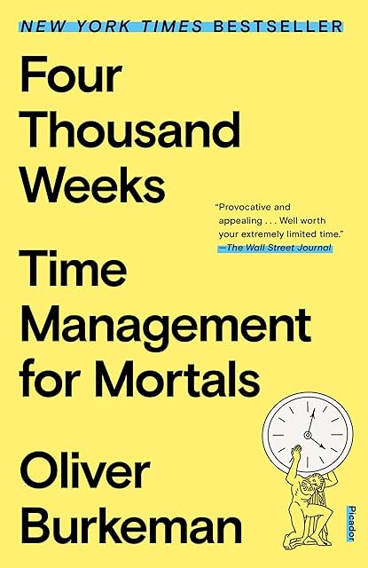

Four Thousand Weeks, by Burkeman
Sunday September 21, 2025
“You could think of this book as an extended argument for the empowering potential of giving up hope.” (page 231)
Burkeman's subtitle is "Time Management for Mortals," but the book is mostly (though not entirely) opposed to time management. Some advice is decent, but the core focus on mortality is dead on arrival. The book is fairly incoherent as a whole, but it has made me think.
The author has many critiques of (other) productivity books. These critiques are mostly wrong or exaggerated. One that I did find meaningful was that often productivity is tied to the false belief that things that aren't measured aren't valuable, as in The Tyranny of Metrics. This makes "productivity" sort of self-centered, often; it isn't "productive" to volunteer, or engage in civic life generally, to know local issues, to vote. This kind of measurement-obsessed productivity, usually implicitly career-oriented, becomes a misdirection of energy.
Burkeman accuses productivity advice of being unsustainable, but comes down too far in the other direction, as if noting that it isn't possible to sprint forever before concluding that all attempts to cover distance are futile. This feels like the common tension between accepting things exactly as they are as opposed to hating things as they are and pushing to change them at all costs. As usual, neither extreme is really great.
Burkeman wants you to live in the moment, which I tend to support as well, but I don't agree with the reasoning having to come from mortality. Fear of death can't really make you live in the moment; death is in the future. Infinite life also wouldn't mean that choices become meaningless; you would still have only one walk through the garden of forking paths. Yes, value every moment—but not out of fear. Not out of a scarcity mindset.

Burkeman references Seneca's De Brevitate Vitae on page four. I think at some point he mentioned How to Live on 24 Hours a Day as well.
On page eight Burkeman mentions three productivity books: The Four-Hour Work Week, Smarter, Faster, Better, and Extreme Productivity. I've read the first two, and after looking briefly into the last, it looks like all of them in fact do talk a lot about prioritizing and saying "no" to things. Burkeman's characterization of the productivity literature as somehow ignoring this seems unfair.
Burkeman says on page nine that productivity works but makes us feel busier. This has not been my experience. I feel less stress when things are managed, and I'm able to confidently know that I've taken care of what I needed to.
Some large chunk of good time management is just memory aids, I think: Ways of organizing things so that they don't fall through the cracks and create stressful problems later.
This struggle against the distressing constraints of reality is what some old-school psychoanalysts call "neurosis," and it takes countless forms, from workaholism and commitment-phobia to codependency and chronic shyness.
Our troubled relationship with time arises largely from the same effort to avoid the painful constraints of reality. (page 30)
This is an interesting characterization of neurosis, especially when considered along with psychosis, in which neurosis is sort of fighting against (or worrying about) reality, while psychosis is instead a clear break with reality.
I'm not sure that's what people usually think of when they think "neurosis," but it's kind of neat.
... I wrote this book for myself, as much as for anyone else, putting my faith in the words of the author Richard Bach: "You teach best what you most need to learn." (page 33)
This Richard Bach and his books including Jonathan Livingston Seagull were apparently quite big in the 70s.
Think of it as “existential overwhelm”: the modern world provides an inexhaustible supply of things that seem worth doing, and so there arises an inevitable and unbridgeable gap between what you'd ideally like to do and what you actually can do. (page 45)
The harder you struggle to fit everything in, the more of your time you'll find yourself spending on the least meaningful things. Adopt an ultra-ambitious time management system that promises to take care of your entire to-do list, and you probably won't even get around to the most important items on that list. Dedicate your retirement to seeing as much of the world as you possibly can, and you probably won't even get to see the most interesting parts. (page 48)
This is ridiculous. Maybe this is where his whole argument falls apart. It's just not true that you have to do everything, and I think this passage illustrates the silliness of it. Who would literally aim to see "as much of the world as you possibly can" and have that mean devoting equal time to every square inch? For his claims here to make any sense you have to imagine both having overwhelming and indiscriminate FOMO and absolutely no sense of prioritization. Both are problems to resolve, not axioms to reason from.
The most fundamental thing we fail to appreciate about the world, Heidegger asserts in his magnum opus, Being and Time, is how bafflingly astonishing it is that it’s there at all – the fact that there is anything rather than nothing. Most philosophers and scientists spend their careers pondering the way things are: what sorts of things exist, where they come from, how they relate to each other, and so on. But we’ve forgotten to be amazed that things are in the first place – that ‘a world is worlding all around us’, as Heidegger puts it. This fact – the fact that there is being, to begin with – is ‘the brute reality on which all of us ought to be constantly stubbing our toes’, in the splendid phrase of the writer Sarah Bakewell. But instead, it almost always passes us by. (page 58)
I sometimes think a related thing, paraphrasing Descartes, "I think, therefore something is going on." I tend to identify with this Heidegger snippet. Existence is a miracle.
In his 2019 book, This Life, the Swedish philosopher Martin Hägglund makes this all a bit clearer and less mystical by juxtaposing the idea of facing our finitude with the religious belief in an eternal life. If you really thought life would never end, he argues, then nothing could ever genuinely matter, because you’d never be faced with having to decide whether or not to use a portion of your precious life on something. ‘If I believed that my life would last forever,’ Hägglund writes, ‘I could never take my life to be at stake, and I would never be seized by the need to do anything with my time.
This Hägglund may have some worthwhile things to say, but I think that like Burkeman he's wrong to focus so much on death as the most important thing, and wrong that without death nothing would matter.
I hear Hägglund is critical of capitalism, but I can't help but think that the focus on finitude is a capitalist economic argument: if supply (of time) is unlimited, then price (value) goes to zero. (I don't believe this.)
It is by consciously confronting the certainty of death, and what follows from the certainty of death, that we finally become truly present for our lives. (page 63)
No, no, no. This might be one path of reasoning that helps a person become more present, but it isn't the only or necessary path.
The real measure of any time management technique is whether or not it helps you neglect the right things. (page 72)
There's a section with these three principles:
- Pay yourself first
- Limit your work in progress
- Personal Kanban suggests limiting to three things.
- Resist the allure of middling priorities
This all seems like basically good advice.
So this Bergson guy wrote Time and free will (mentioned on page 83) and, I mean, cool title, but otherwise doesn't seem that good, especially if the thinking is similar in quality to Bergson's ideas about motivated evolution.
Machine for misusing your life (page 94)
Burkeman mostly tries to avoid the appearance of value judgments by framing the objective as spending time on what you value (whatever that is) but he does come out clearly against social media. So you better not value social media!
There's an interesting sort of story about a monk's experience with ice water, the point of which was that trying to ignore or deny the experience of cold was worse than focusing on the experience and accepting, living the experience.
You're obliged to deal with how your experience is unfolding in this moment, to resign yourself to the reality that this is it. (page 106)
He's trying to connect boredom to finitude in the sense of limited lifespan, but he accidentally gives the lie to it. It isn't that you're upset that you're using your limited time on Earth in a way that isn't fun; it's that it isn't fun "in this moment."
He does talk about living in the moment, but doesn't seem to resolve the conflict with the lifespan view.
The real problem isn’t planning. It’s that we take our plans to be something they aren’t. What we forget, or can’t bear to confront, is that, in the words of the American meditation teacher Joseph Goldstein, ‘a plan is just a thought’. We treat our plans as though they are a lasso, thrown from the present around the future, in order to bring it under our command. But all a plan is – all it could ever possibly be – is a present-moment statement of intent. It’s an expression of your current thoughts about how you’d ideally like to deploy your modest influence over the future. The future, of course, is under no obligation to comply. (page 123)
This makes sense. What's the quote I think of... Eisenhower: "Plans are worthless, but planning is everything." The plan has no influence over the future, but it does help you make decisions in the moments you encounter.
Burkeman mentions Radically Condensed Instructions for Being Just as You Are, which is more nondualist, the-moment-is-all-there-is stuff.
Trying to live in the moment is like trying too hard to sleep. Trying to force it pushes you further from it. But on the other hand, you have no other option but to be here now.
Burkeman mentions Lafargue's The right to be lazy.
"According to Lafargue, wage labour is tantamount to slavery, and to fight as a labour movement for the extension of slavery is preposterous. In the book, Lafargue proposes the right to be lazy, in contrast to the right to work, which he deems bourgeois."
Fully Automated Luxury Communism!
‘Nothing is more alien to the present age than idleness,’ writes the philosopher John Gray. He adds: ‘How can there be play in a time when nothing has meaning unless it leads to something else?’ (page 154)
I think Burkeman also talks about instrumental use of time and tourist photography, the "stop taking pictures and experience it" argument.
I think of my "Is it worth doing even if it fails?" which I think is somewhat related... value the act itself regardless of the outcome.
The publisher and editor Karen Rinaldi feels about surfing the same way that I do about cheesy piano rock, only more so: she dedicates every spare moment she can to it, and even wiped out her savings on a plot of land in Costa Rica for better access to the sea. Yet she readily admits that she remains an appalling surfer to this day. (It took her five years of attempting to catch a wave before she first managed to do so.) But ‘in the process of trying to attain a few moments of bliss’, Rinaldi explains, ‘I experience something else: patience and humility, definitely, but also freedom. Freedom to pursue the futile. And the freedom to suck without caring is revelatory.’ Results aren’t everything. Indeed, they’d better not be, because results always come later – and later is always too late. (page 160)
Burkeman talks about a painting called "Boy with a Squirrel," but that painting is "A Boy with a Flying Squirrel." Flying!
It depicts Copley's teenaged half-brother Henry Pelham with a pet flying squirrel, a creature commonly found in colonial American portraits as a symbol of the sitter's refinement.
How cool is that!
There are "Three principles of patience" (around page 180)
- Develop a taste for having problems
- This reminds me of my first "thinking card," embrace problems.
- Embrace radical incrementalism
- Originality lies on the far side of unoriginality
Burkeman has this idea, "cosmic insignificance therapy," which is intended to be a relief. It reminds me of the total perspective vortex from The Hitchhiker's Guide to the Galaxy, but of course there it was supposed to be a method of torture.
There is a sort of cruelty, Iddo Landau points out, in holding yourself to standards nobody could ever reach (and which many of us would never dream of demanding of other people). The more humane approach is to drop such efforts as completely as you can. Let your impossible standards crash to the ground. Then pick a few meaningful tasks from the rubble and get started on them today. (page 222)
Burkeman mentions this documentary, A Life’s Work.
What's it like to dedicate your life to work that won't be completed in your lifetime? Fifteen years ago, filmmaker David Licata focused on four projects and the people behind them in an effort to answer this universal question.
To me this is about caring about something, whether it makes sense or not, making meaning for yourself, and not really at all about death.
You could think of this book as an extended argument for the empowering potential of giving up hope. (page 231)